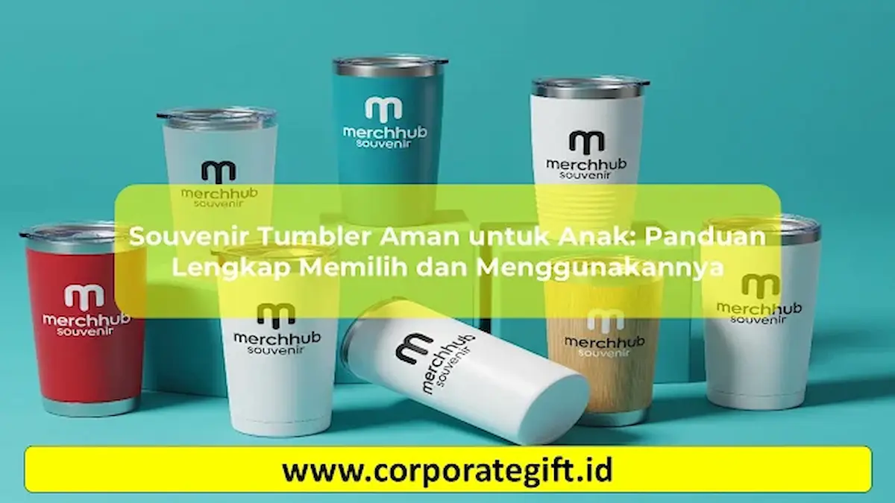

Corporate Gifts ID - Penggunaan souvenir tumbler aman untuk anak kini semakin diminati, tidak hanya untuk perayaan ulang tahun personal, tetapi juga untuk agenda tahunan institusi seperti peringatan Hari Anak Nasional, promosi sekolah taman kanak-kanak (TK) dan SD, hingga cinderamata family gathering perusahaan. Botol minum anak yang ideal wajib memenuhi standar ketat: material bersertifikasi food grade bebas BPA (BPA-Free), tutup berteknologi anti-tumpah, kapasitas ergonomis antara 200 hingga 350 ml, serta kontur fisik tanpa sudut tajam yang berisiko melukai tangan si kecil.
Poin Kunci Pemilihan Tumbler Ramah Anak:
- Sertifikasi Bebas Toksin: Pastikan material plastik berlogo segitiga daur ulang PP (Polypropylene kode 5) atau Tritan berlabel 100% BPA-Free dan Phthalate-Free.
- Mekanisme Tutup Anti-Bocor: Dilengkapi segel silikon fleksibel dan pengunci ganda (safety lock) agar tidak tumpah saat terguncang di dalam ransel sekolah.
- Ukuran dan Bobot Proporsional: Volume 200 - 350 ml sangat direkomendasikan agar anak dapat menggenggam dan membawa botol secara mandiri tanpa keberatan.
- Teknik Cetak Aman (Non-Toxic): Gunakan tinta sablon ramah lingkungan atau cetak UV berstandar aman anak yang tidak mudah mengelupas atau luntur ke mulut.
Kenapa Standar Keamanan Souvenir Tumbler Anak Sangat Krusial?
Anak-anak memiliki daya tahan tubuh dan sensitivitas metabolik yang lebih rentan terhadap zat kimia berbahaya dibanding orang dewasa. Penggunaan wadah minum plastik non-standar berisiko memicu pelepasan partikel kimia (chemical leaching), seperti Bisphenol A (BPA) dan ftalat, terutama saat terpapar cairan bersuhu hangat atau asam buah.
Selain aspek proteksi kesehatan, memberikan cinderamata tumbler berkualitas tinggi membawa nilai manfaat yang sangat positif:
- Investasi Nilai Pakai Harian: Berbeda dengan suvenir pajangan atau mainan plastik sekali pakai yang cepat rusak, tumbler digunakan setiap hari ke sekolah, taman bermain, dan tempat les.
- Edukasi Kebiasaan Hidup Sehat: Mengajarkan anak disiplin mencukupi hidrasi air putih sekaligus membiasakan gaya hidup ramah lingkungan (eco-friendly lifestyle) dengan menolak botol plastik sekali pakai sejak dini.
- Reputasi Positif bagi Penyelenggara: Orang tua penerima suvenir akan sangat mengapresiasi perhatian panitia atau perusahaan yang memprioritaskan keselamatan anak-anak mereka.
Tabel Komparasi Material Tumbler: Plastik BPA-Free vs Stainless Steel SUS304
Pemilihan material menentukan ketahanan benturan, bobot fisik, dan kemampuan retensi suhu minuman. Berikut tabel perbandingan karakteristik tiga material utama tumbler anak:
| Material Tumbler | Keunggulan Utama | Kekurangan / Catatan | Target Usia Ideal | Rekomendasi Event |
|---|---|---|---|---|
| Plastik PP / Tritan (BPA-Free) | Sangat ringan, anti-pecah saat terbanting, pilihan warna cerah, harga terjangkau | Tidak mampu menahan suhu panas/dingin dalam waktu lama | Balita - SD Awal (3 - 8 tahun) | Souvenir ulang tahun anak, promosi TK/PAUD, goodie bag massal |
| Stainless Steel SUS304 | Tahan panas dan dingin hingga 12 jam, bebas karat, higienis, sangat awet | Bobot sedikit lebih berat, rentan penyok jika jatuh dari ketinggian ekstrem | Usia Sekolah (7 - 14 tahun) | Family gathering B2B kantor, perpisahan kelas SD/SMP, merchandise sekolah |
| Kaca Borosilicate + Silicone Sleeve | Tampilan mewah, 100% netral tanpa menyerap bau atau warna minuman | Bisa pecah bila terbentur lantai keras, wajib didampingi orang tua | Remaja Awal (11+ tahun) | Event privat keluarga, hampers eksklusif hari raya anak |
Desain Ergonomis dan Fitur Wajib Tumbler Ramah Anak
Saat memilih souvenir tumbler kantor atau merchandise event keluarga, pastikan unit yang dipesan memiliki spesifikasi fungsional berikut:
- Mekanisme Flip-Top dengan Pengunci (Safety Lock): Anak-anak sering melempar tas ransel mereka secara sembarangan. Tutup dengan tombol tekan (push-button) dan tuas pengunci memastikan bibir botol tidak terbuka sendiri di dalam tas.
- Sedotan Silikon Lembut (Soft Food-Grade Silicone Straw): Untuk balita dan anak TK, sedotan lentur mencegah benturan keras pada gusi dan gigi depan yang sedang tumbuh.
- Grip Ergonomis atau Tali Gantung (Lanyard Strap): Bodi botol yang memiliki lekukan kontur atau lapisan silikon anti-slip memudahkan jemari anak memegang botol saat tangan mereka berkeringat sehabis bermain.
- Diameter Bukaan Botol yang Lebar (Wide Mouth): Memudahkan orang tua mencuci bagian dasar botol secara bersih dan memungkinkan memasukkan es batu kecil dengan mudah.

Kombinasi warna cerah, tutup flip-top anti bocor, dan sedotan silikon higienis.
Tips Memilih Souvenir Tumbler Anak untuk Event dan Sekolah
Pengadaan suvenir dalam volume puluhan hingga ratusan unit memerlukan kecermatan agar hasil akhir memuaskan. Berikut panduan praktis dari konsultan merchandise kami:
- Minta Uji Sampel Fisik (Physical Sample): Sebelum produksi massal dijalankan, minta sampel botol kepada vendor. Uji dengan mengisinya air penuh, balikkan botol, dan kocok kuat untuk mengonfirmasi tidak ada rembesan air sama sekali.
- Verifikasi Tinta Cetak Logo: Cetak sablon atau print UV digital pada permukaan tumbler anak wajib menggunakan formula tinta non-toksik (food-contact safe). Tinta tidak boleh memiliki aroma menyengat yang tajam.
- Sesuaikan Tema Karakter dengan Kelompok Usia: Hindari visual yang terlalu dewasa. Pilih palet warna pastel seperti mint green, baby blue, soft pink, atau lilac dengan ilustrasi hewan lucu, tema luar angkasa, atau maskot resmi institusi.
SOP Penggunaan dan Perawatan Higienis Tumbler Anak
Keamanan tumbler sangat ditentukan oleh cara membersihkannya. Bagikan tips perawatan singkat ini kepada orang tua penerima suvenir:
- Sterilisasi Pertama: Cuci bersih seluruh komponen dengan sabun pencuci botol bayi dan air hangat sebelum pertama kali digunakan. Jangan merebus tumbler plastik tipis di air mendidih kecuali bertanda aman sterilisasi (sterilizer safe).
- Lepas Karet Silikon Gasket: Jamur hitam mikroskopis kerap berkembang biak di sela-sela karet penutup. Lepas karet seal secara berkala menggunakan tusuk gigi atau pinset kecil untuk dicuci dan dikeringkan terpisah.
- Hindari Minuman Berkarbonasi & Susu Terlalu Lama: Jangan menyimpan susu formula atau jus buah asam pekat lebih dari 4 jam di dalam tumbler stainless bersuhu ruang untuk mencegah fermentasi bakteri yang menimbulkan bau tak sedap.
- Keringkan Sempurna: Simpan botol dalam kondisi tutup terbuka dan posisi terbalik di rak piring yang memiliki ventilasi udara baik.
Ide Kustomisasi Edukatif dan Kemasan Menarik
Untuk memberikan nilai emosional yang tinggi, CorporateGifts.ID menyediakan fasilitas kustomisasi kreatif khusus suvenir anak:
- Personalisasi Nama Tiap Anak (Name Engraving / UV Print): Mencetak nama masing-masing anak pada setiap botol membuat mereka merasa spesial dan mencegah insiden botol tertukar di kelas atau penitipan anak.
- Indikator Jadwal Minum (Hydration Tracker Time Markers): Garis penanda waktu kreatif di sisi botol, misalnya "Pukul 09.00 - Semangat Belajar!" hingga "Pukul 12.00 - Waktu Makan Siang!", memotivasi anak menghabiskan bekal air mereka.
- Packaging Kotak Jinjing Kartun: Dikemas rapi menggunakan gift box duplex berdesain jendela mika atau pouch kanvas mini yang siap dibagikan tanpa perlu repot membungkus ulang.
FAQ Souvenir Tumbler Aman untuk Anak
Kesimpulan dan Rekomendasi Pemesanan
Memilih souvenir tumbler aman untuk anak bukan sekadar memberikan botol minum, melainkan menghadirkan kado apresiasi yang sehat, bermanfaat harian, dan mendidik. Konsultasikan konsep acara Anda bersama tim spesialis katalog CorporateGifts.ID untuk mendapatkan penawaran harga grosir, garansi bahan food grade, serta layanan desain visual mockup gratis sebelum produksi dimulai.

Ditulis oleh: Sholikhatun Nikmah
Creative Product Designer & Bespoke Packaging ConsultantDesainer produk dan konsultan pengemasan eksklusif di CorporateGifts.ID. Berpengalaman lebih dari 8 tahun dalam kurasi drinkware fungsional, material ramah anak bersertifikasi food grade, serta harmonisasi identitas visual untuk ribuan merchandise instansi dan korporasi.
Lihat Profil Lengkap & Panduan Lainnya